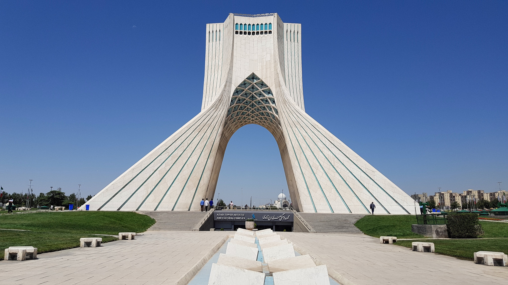
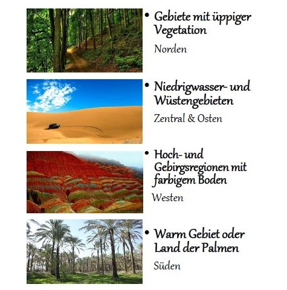
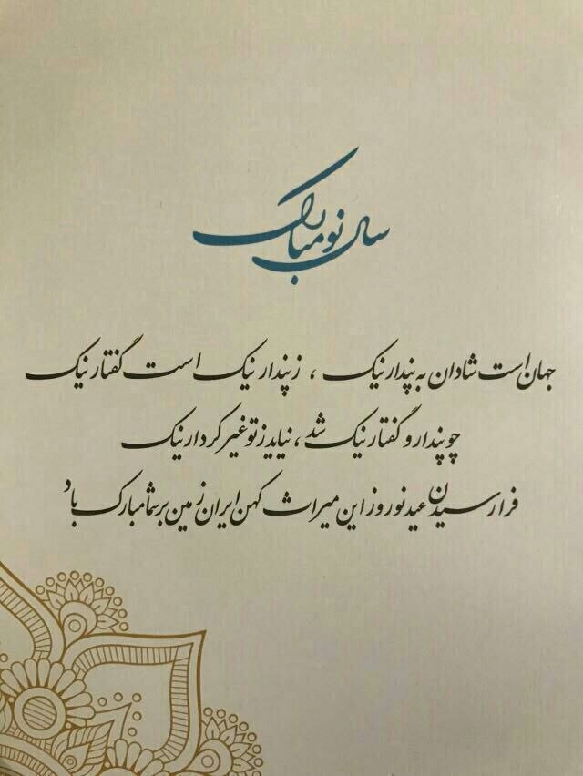
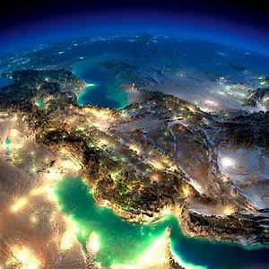
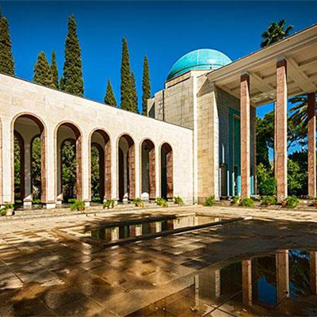
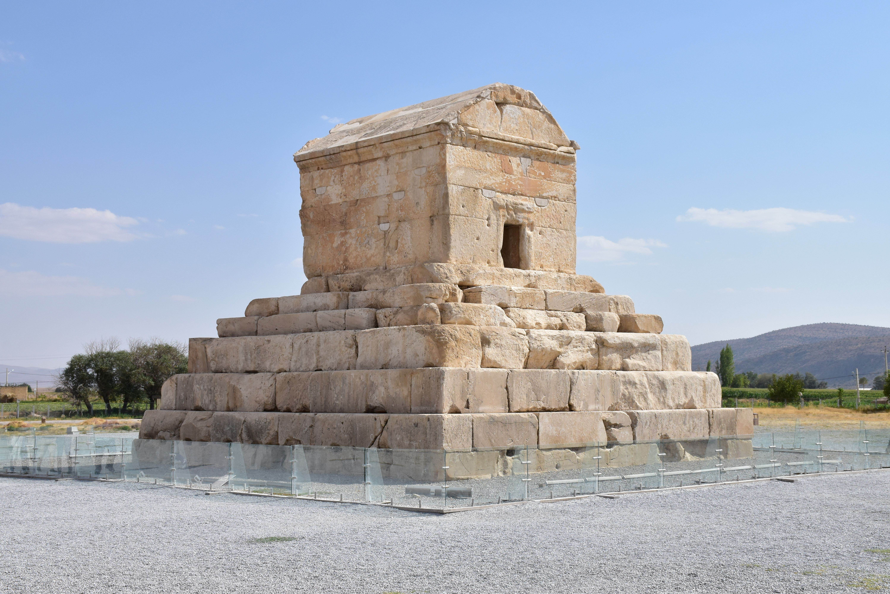
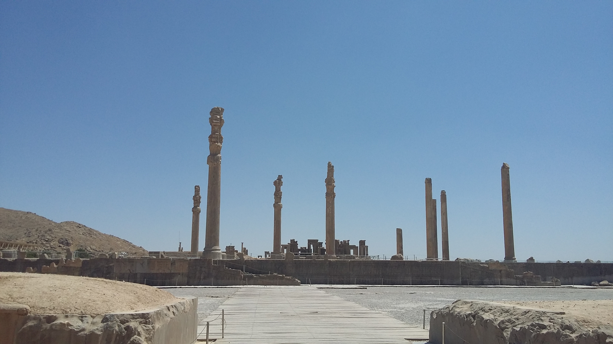
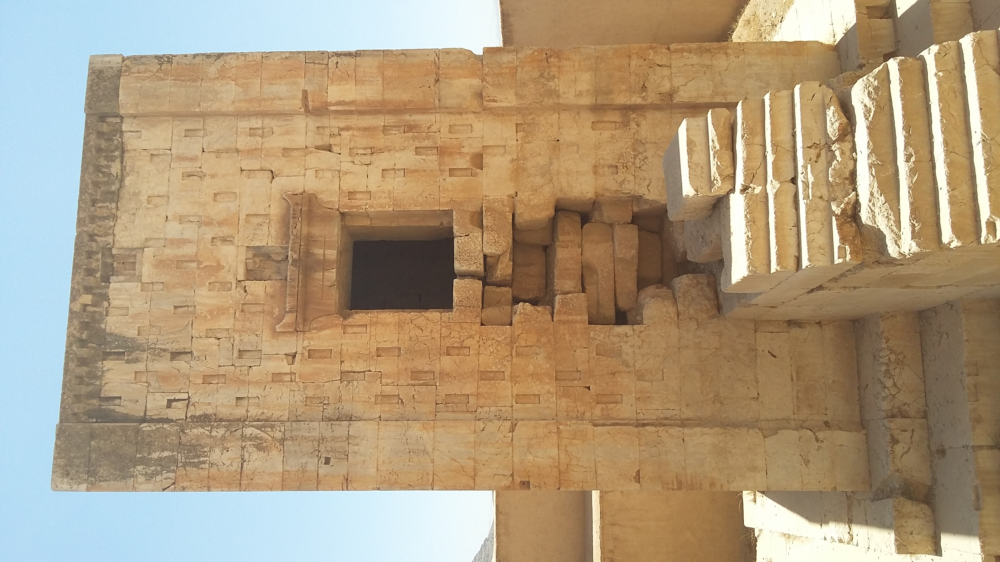
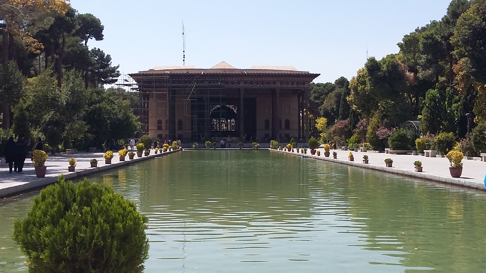
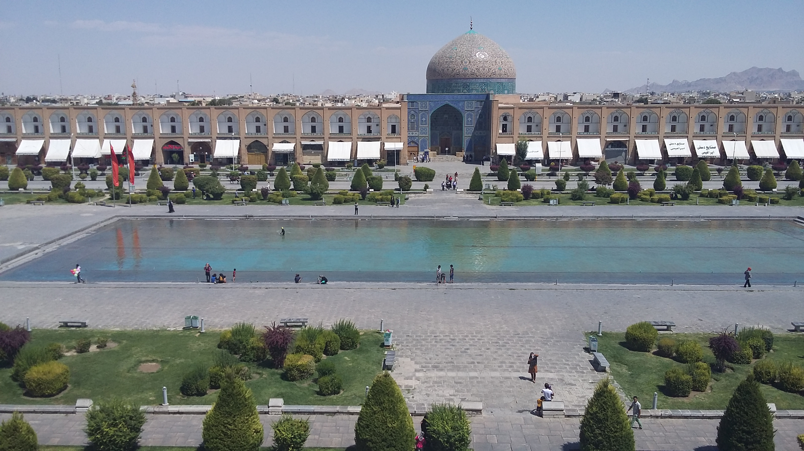

Ich bin Siavash und stelle die iranische Sehenswürdigkeiten in den Städten vor.
Navigation zu den Städten Hier kann man die Fotos der iranischen Sehenswürdigkeiten sehenWo liegt der Iran?
Der Iran liegt im Nahen Osten in Vorderasien und grenzt unter anderem an das Kaspische Meer im Norden sowie den Persischen Golf im Süden.
Wie viele Einwohner?
Der Iran hat eine Bevölkerung von rund 89 Millionen Einwohnern.
Welches Klima?
Das Klima im Iran ist überwiegend trocken bis halbtrocken. Da der Iran jedoch ein „Vier-Jahreszeiten-Land“ ist, reicht das Klima von kalten Wintern mit Schnee im Norden bis hin zu subtropischer Hitze im Süden.

In welcher Sprache spricht man?
Die offizielle Amtssprache im Iran ist Persisch (Farsi).


Ich bin Siavash. Zurzeit habe ich mein Abitur an der it.schule Stuttgart absolviert. Meine Schwerpunkte sind Informationstechnik, Mathematik, Physik, Literatur und Geschichte.

Saadi Shirazi lebte im 13. Jahrhundert und gilt als einer der bedeutendsten Dichter und Denker der klassischen persischen Literatur.

Dieses monumentale Grabmal ist die letzte Ruhestätte von Kyros dem Großen, der ca. 590 – 530 v. Chr. lebte und als legendärer Gründer des Achämenidenreichs gilt.

Die Ruinen einer UNESCO-Welterbestätte, zeugen bis heute vom einstigen Glaz und der architektonischen Meisterleistung des antiken Perserreichs.

Es ist ein faszinierendes und turmartiges Monument aus der Achämenidenzeit, dessen genaue Funktion als Feuertempel, Grabstätte oder Schatzkammer bis heute ein Geheimnis der Geschichte bleibt.

Es ist ein Meisterwerk der safawidischen Architektur, dessen zwanzig elegante Holzsäulen sich im großen Palastbecken spiegeln und so die namensgebenden vierzig Säulen entstehen lassen.

Er ist einer der weltweit größten Plätze und fasziniert als UNESCO-Welterbe durch seine monumentalen Moscheen, den prachtvollen Ali-Qapu-Palast und den traditionellen Basar.
Er wurde im Jahr 1971 eröffnet, verbindet morderne Architektur mit traditionellen persischen Stilelementen und gilt als das weltberühmte, markante Wahrzeichen der Hauptstadt Teheran.
Der Iran blickt auf eine 7500-jährige Zivilisation zürück.
Jede Jahreszeit eignet sich für eine Reise, da der Iran ein faszinierendes Vier-Jahreszeiten-Land ist, in dem man zu jeder Zeit Regionen mit idealem Klima findet.